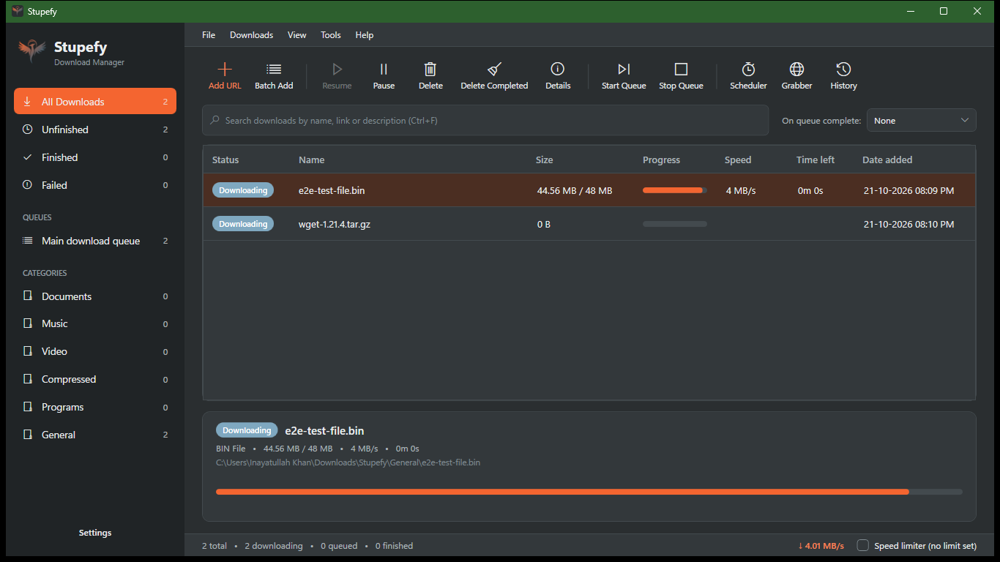
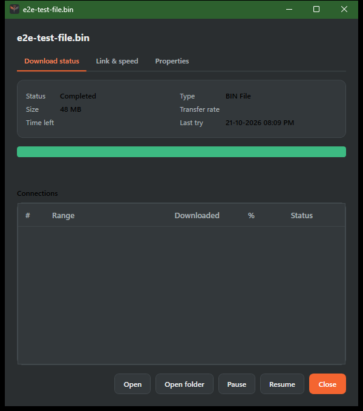
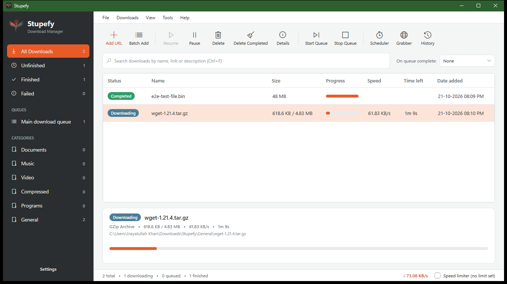
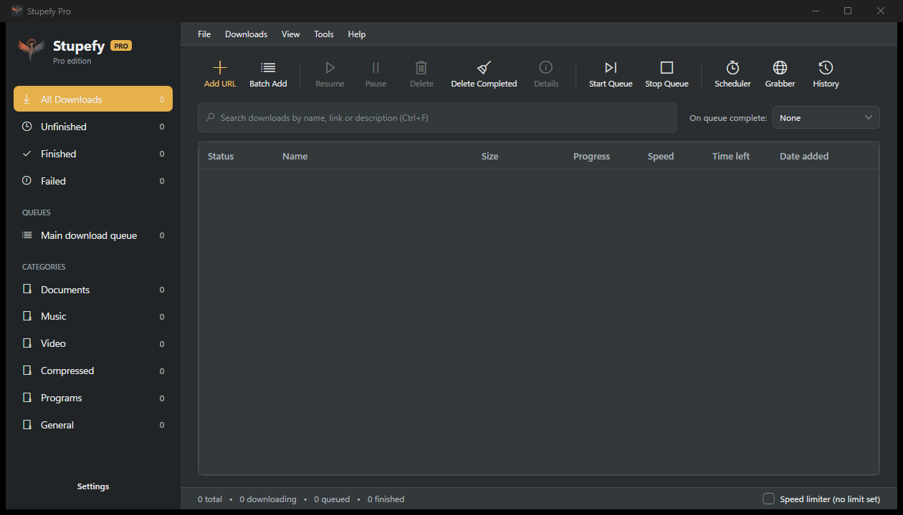

A download manager for Windows
Stupefy splits a file across up to 32 connections, picks up exactly where it stopped after a crash, a reboot or an expired link, and puts a Download this video button on whatever you're watching. Free. No ads, no account, no telemetry.
Windows 10 (1809) and Windows 11, 64-bit · also winget install stupefy

Two downloads, eight connections each; the strip at the bottom shows every segment filling in.
How it works
Download managers are faster than browsers for one reason, and it isn't "more connections". Here is what Stupefy actually does with a link.
Add a link, paste a whole list, let the browser extension catch a download, or press the floating button on a video. Copy a link and Stupefy offers to take it.
A quick probe: how big the file is, whether the server lets a download start in the middle, what the file is really called. Then the file is cut into segments.
More segments are planned than run at once, so an idle connection always has work and nobody waits for the slowest one. That, not the connection count, is the trick. Free runs 4 connections; Pro runs 32.
Crash, reboot, Wi-Fi gone, link expired: paste a fresh link and nothing starts over. A stalled connection is noticed and retried on its own. Finished files get a checksum if you want one.
The app's own progress strip, redrawn here: every segment fills from its own offset, at its own pace.
What it does
Reboots, crashes, dropped Wi-Fi, expired links. Progress lives on disk, so even a deleted temp file is detected and handled instead of corrupting the result.
The Chrome and Edge extension catches downloads of the file types you choose, floats a "Download this video" button over any player, and sends whole pages of links at once.
Streaming players go through yt-dlp, which handles thousands of sites and is kept up to date for you. Pick 1080p, 720p, or audio only as MP3.
Categories file every download into the right folder by type. History is searchable. The complete dialog opens the file or its folder in one click.
A speed limit for when you're on a call, quiet hours that lower it on a schedule, and a proxy if you need one. FTP too.
Dark and light themes that follow Windows, a tray mode, keyboard shortcuts everywhere, and updates that install from inside the app when you say so.
Compared with
I used Internet Download Manager for years and I think it's good software. This table is here so you can decide, not so I can win it.
| Stupefy Free | Stupefy Pro | Internet Download Manager | Free Download Manager | Your browser | |
|---|---|---|---|---|---|
| Price | Free | $5, once | Paid, per PC: a one-year or a lifetime licence (about ₹1,110 / ₹2,310 on their site in India, Nov 2026); 30-day trial | Free, donations welcome | Free |
| Connections per file | 4 | 32 | Dynamic segmentation, "up to 8 times" faster | Segmented, "up to 10× faster" | 1 |
| Resume after a crash or reboot | Yes | Yes | Yes | Yes | Sometimes, if the server allows it and the tab is still there |
| Continue with a fresh link after the old one expired | Yes, from the same byte | Yes | Not stated | Not stated | No, starts over |
| Catches browser downloads | Yes, Chrome and Edge extension | Yes | Yes, most browsers | Yes, Chrome, Firefox, Edge | — |
| "Download this video" button over any player | Yes, any site | Yes | Yes, its download panel | Via add-ons | No |
| Queues and scheduler | One queue; a single download can be scheduled | Several queues, each with its own limit and repeating schedule | Yes, several queues | Not stated | No |
| Saved site logins, virus scan of finished files | No | Yes | Site logins | Not stated | Browser's own |
| Dark theme that follows Windows | Yes | Yes, plus a gold Pro look | Yes | Not stated | Yes |
| Ads, telemetry, account | None | None | "No spyware or adware", per their site | "No adware, no malware", per their site | Depends on the browser |
| Platforms | Windows 10 and 11 | Windows 10 and 11 | Windows | Windows, macOS, Linux, Android | Everywhere |
The two columns about other products come from their own websites as I read them on 8 November 2026. If I've got something wrong or out of date, tell me and I'll fix it the same week.
A closer look



Pricing
Why five dollars? Because it's what I'd pay without thinking about it, and I'd rather have many people pay a little than a few pay a lot. The key arrives by e-mail from Gumroad; paste it into Settings → Stupefy Pro and the app turns gold on the spot. If $5 is still a lot where you live, Gumroad applies a regional discount at checkout.
FAQ
No. It has no time limit and no nag screens. Pro adds features; it does not unlock a trial that's running out.
The installer isn't code-signed yet; a signing certificate costs more per year than a new app earns in its first months, so that comes later. Until then: the download page shows the installer's SHA-256, and you can check it with one PowerShell command. The app sends nothing anywhere except the connections listed in the privacy policy.
Buy once on Gumroad, get a key by e-mail, paste it into Settings → Stupefy Pro. It's checked online once, then confirmed quietly now and then; being offline for weeks doesn't switch Pro off. One key covers up to 10 of your own PCs; deactivate on one to free a slot.
Stupefy asks this website about once a day whether there's a newer version. If there is, you see what's new and install it when you click Install, inside the app, after it has checked the installer against its published checksum. You can turn the daily check off and use Help → Check for updates instead.
Any page with a video player. A plain video file downloads directly with all connections; streaming players go through yt-dlp, which understands thousands of sites and is refreshed weekly because sites change. Downloading a video you don't have the rights to is on you, not the tool.
Yes. Reply to your Gumroad receipt within 30 days and you'll get your money back; the key switches itself off within a week. No forms, no questions you have to answer.
No, and probably not soon. Stupefy is written for Windows specifically, and I'd rather make it excellent on one platform than passable on three.
Not yet. The engine is written from scratch in C# and .NET. The browser extension is plain JavaScript with no build step; unzip it and read it.
Only what it has to: the sites you download from, this website for the version check, GitHub for the video-tool updates, and Gumroad if you activate a key. No analytics, no crash reports, no account. The privacy policy is one page long on purpose.
IDM is good, and I used it for years. I wanted one that looks like it belongs on Windows 11, that is free for the basics, that is honest about what it sends, and that doesn't cost a yearly fee per PC. Since nobody had made it, I did.
From the maker
Hi, I'm Inayat. I'm a developer in India, and Stupefy started as the download manager I wanted for myself: fast, quiet, and done with nagging. The engine is built from scratch and tested against real servers that drop connections, lie about file sizes and expire links, because that's what the internet does.
I'm one person, which means two things. Bugs get fixed by the person who wrote them, usually quickly. And I don't have a marketing department, so if Stupefy saves you time, telling one friend helps more than you'd think.
If something breaks, write to me. The address is in the app's About box.